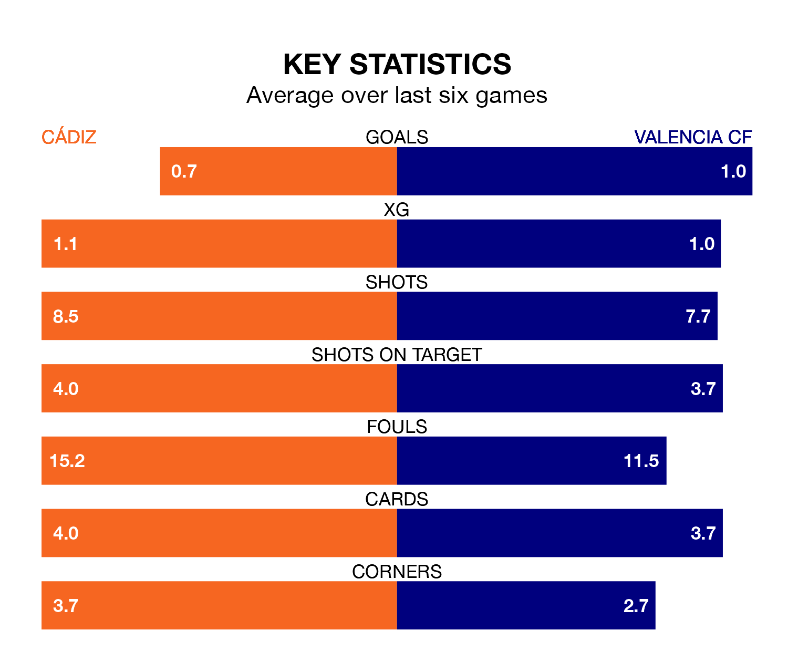

Cádiz face Valencia CF at the Estadio Nuevo Mirandilla on Sunday looking to secure a first win in 16 La Liga games.
Cádiz have lost seven and drawn eight matches since they last earned three points – against Villarreal on September 1.
They face a Valencia side who have won five and drawn five over that time.
Cádiz are 18th in the table after 19 games, of which they have won two and drawn nine, earning 15 points.
Valencia are 10 places ahead of the home team in eighth, with seven wins and five draws putting them on 26 points.
With 14 goals in 19 games so far this season, Cádiz are the league's lowest scorers with 0.7 goals per game. And they are conceding more than average, letting in 26 goals at a rate of 1.4 per game.
The visitors are also below average scorers, with 1.2 goals per game, compared to a league average of 1.3. They have also conceded 1.2 goals per game.
With Giorgi Mamardashvili between the sticks, Valencia can rely on one of the league's safest pair of hands. He has kept six clean sheets in his 19 appearances this season in La Liga.
In Cádiz's net, Jeremías Ledesma has two clean sheets in 16 games. He has conceded a goal every 68 minutes, 20% more often than the 81 minutes between goals for Mamardashvili.
Over the last two years, Cádiz and Valencia have played each other on five occasions. They won two each, and they drew once.
On average, Cádiz scored 0.8 goals and Valencia 1.0 in those matches.
Their last meeting was on October 23, when Valencia won 2-0 at home.
Cádiz's last match was on January 3, a 2-0 loss against Granada CF.
Valencia beat Villarreal 3-1 last time out, on January 2, with Pepelu (two) and Roman Yaremchuk on the scoresheet.
Updated: 15:34, 08/01/24